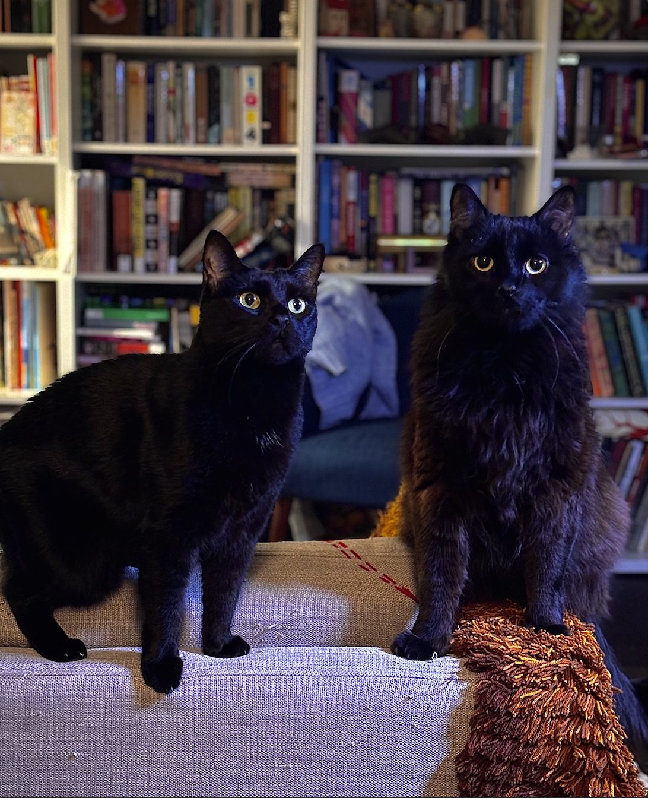
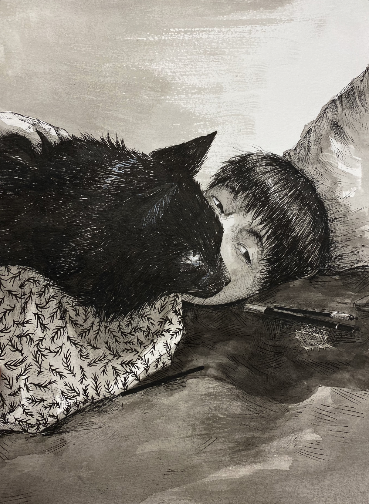

Seven Hahn-Ott is a seventeen year old student who was born and lives in Manhattan, New York. They are nonbinary, and have been out for over four years. They have two cats, and live with their two parents and their little sister. They are an artist being raised by two artists, and have explored different art medias their whole life. This portfolio will show you some of the medias they've explored as well as what they've achieved with their artworks.


The image on the left shows Seven's two cats: respectively, Kismet and Anzu. The drawing on the right shows a self portrait done in pen and ink. The self portrait was one of the winners of PSART 2023, and was featured in the Metropolitan Museum of Art.